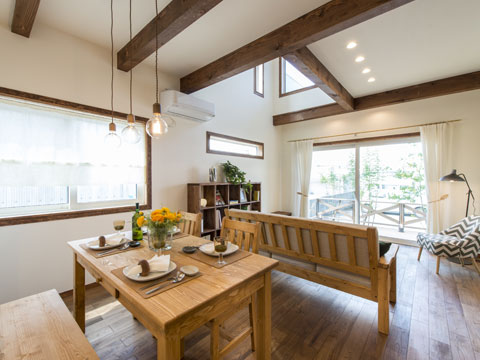
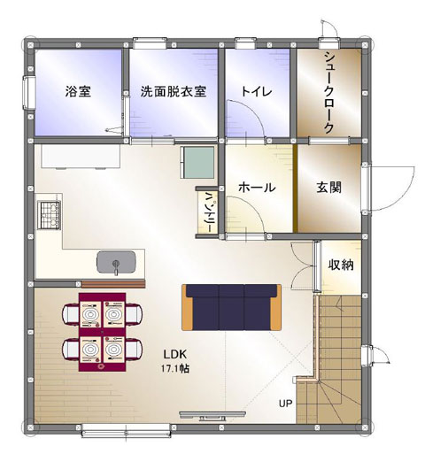
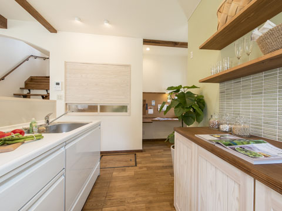
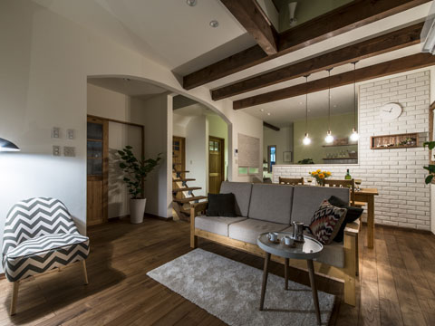
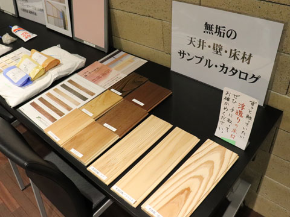

- ホーム
- 初めての方へ「ココロホームの家づくり」｜初めての家づくり・ワンランク上の家
First初めての家づくり

家づくりは、ほとんどの方にとって初めての経験となります。「理想の家をつくりたい」「家族が幸せに過ごせる住まいにしたい」……そう考えながらも、知識がなければなかなか思い通りにいかないのが現実。人生でもっとも大きな買い物で失敗しないためにも、事前にポイントを押さえておくことが大切です。
こちらでは、豊中市で注文住宅を手掛けるココロホームが、初めての家づくりの際に知っておきたいポイントをご紹介しています。
間取り・設計のポイント
家づくりで最初に決めておくべき間取りや設計のポイントをまとめました。
間取りのポイント
| 家族構成に合わせる | お子さまが大きくなって、やがて独立して夫婦二人の住まいに……というように、家族の現在だけでなく未来まで見据えた間取りにしましょう。 |  |
|---|---|---|
| 動線を考える | どんなにオシャレな家でも、使い勝手が悪ければいい家とは言えません。特に家事をする方にとって使いやすい動線を意識しましょう。 | |
| 土地に合わせる | 土地が狭い場合でも、間取り次第で使いやすい住まいにすることができます。土地に合わせた間取りをかんがえましょう。 |
設計のポイント
| 家族団らんを考える | 住まいは家族のコミュニケーションの場です。家族が集まる場所を中心に設計することで、家はより住みやすくなります。 | |
|---|---|---|
| 周辺環境を考える | 周りに家がどれくらいあるのか、日照条件はどうなのか……。家の立地条件によって、設計のポイントも変わってきます。 |
設備・内装のポイント
住まいでの生活をより便利で快適なものにするのが、設備や内装です。押さえておくべきポイントをまとめました。
| 使いやすいキッチン | キッチンにもさまざまな素材やデザインがあり、使い勝手も大きく異なります。主に使用する方が一番使いやすいものを選ぶことが大切です。 |  |
|---|---|---|
| 壁材の選択 | 壁は室内のイメージを大きく変える重要なポイントです。特に人気なのは白系ですが、アクセントを入れるなどこだわることで個性を出すこともできます。 | |
| 床材選び | 床材は「複合（フローリング）」と「無垢」に大きく分かれます。コストを下げるなら複合ですが、無垢は肌触りのやさしさやあたたかさに定評があります。 |
First「ワンランク上の家」をつくるために

ほとんどの方にとって、家づくりは一生に一度。非常に高額な費用をかけるのですから、ワンランク上の家をつくりたいと思いませんか？ 多くの方は、家づくりについて知識がないため、宣伝に力を入れている大手ハウスメーカーを選びがちです。しかし、ワンランク上の家をつくるためには、コストについてしっかり考える必要があります。
同じ予算で家のランクを上げるには

家づくりにかかる予算で特に大きいのは建材費や人件費で、どの業者でも大きな差はありません。しかし、宣伝に力を入れている業者の場合は販促費用や展示場の維持費なども予算に上乗せせざるを得ません。
同じ予算で家のランクを上げるポイントは、その業者が何に力を入れているのか知ることです。宣伝費は削って、建材の仕入れコストもできる限り削減するように努めている業者であれば、同じコストでもまったくランクが異なる家をつくることができるでしょう。
大切なのは、知名度で業者を選ぶことではなくワンランク上の家を建てる企業努力をしている業者を見つけることだと言えるでしょう。